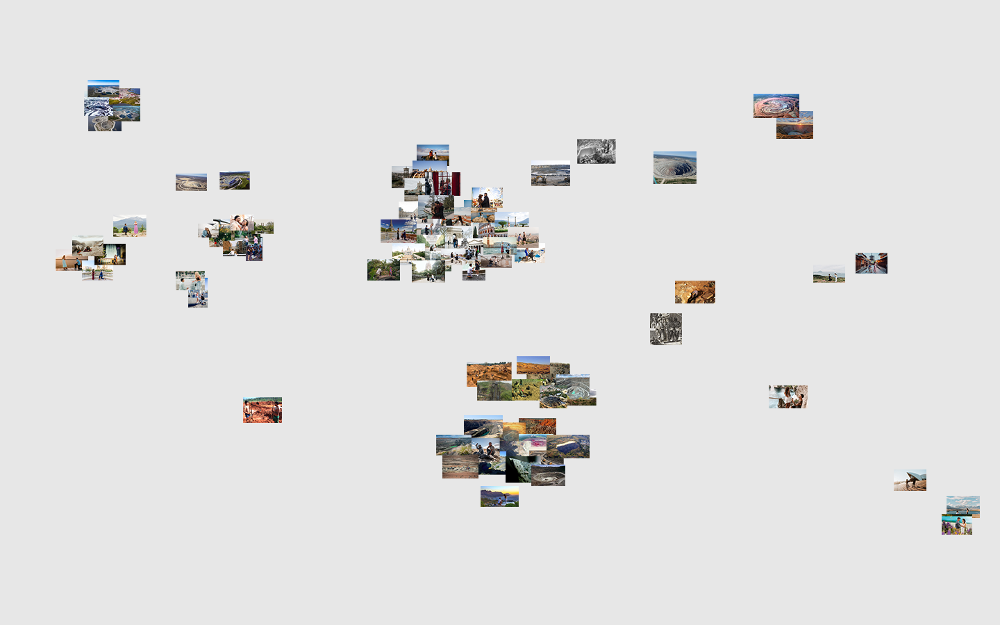

BENEATH THE BRILLIANCE
"Beneath the Brilliance" is an immersive exploration of love's multifaceted nature, juxtaposing the joyous moments of engagements and proposals with the stark reality of diamond mining. Through an interactive map feature, this archive offers a unique geographical context, showcasing the locations of these intimate moments alongside the often-hidden origins of the diamonds that symbolize them. By highlighting the global impact of diamond sourcing, "Beneath the Brilliance" invites viewers to contemplate the broader implications of their cherished symbols of love. It also prompts reflection on the performative nature of some proposal pictures, which often prioritize picturesque or popular locations, sparking a dialogue on sustainability, ethics, and the true cost of romance.
Explore the Map
Explore by Continent
Image Map
